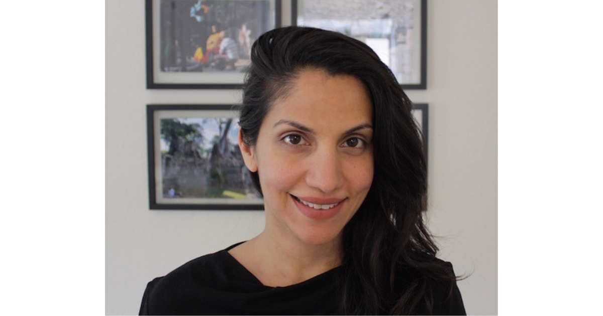

We caught up with Nira Datta, a Senior UX Content Designer at CivicActions, to discuss her journey in civic tech, the power of user-centered design, and her exciting work on projects like the Department of Veterans Affairs (VA) tele-health check-in app!
What is your role, where are you based, and what does your day-to-day look like?
I’m a Senior UX Content Designer at CivicActions. My day-to-day varies depending on the problem I’m solving, often zooming in and zooming out, with a lot of context-switching. This can range from discovery and research work to determine larger, strategic decisions and product direction to hyper-focused Figma sessions to ensure designs are high-standard and achieve the goals we set out to achieve for users. There are also lots of collaborative Zoom sessions with our developers and product team.
What brought you to CivicActions, and how long have you been here?
Social impact has always driven my professional decisions. I’ve particularly wanted to combine my creative interests (writing/design) with social impact. A mission-driven agency like CivicActions focused on civic tech/civic design seemed like the perfect fit.
What do you find the most exciting or surprising about doing design work in civic tech?
Influencing and building trusted relationships is just as (arguably, even more) important than the craft.
What contribution are you most proud of that you’ve accomplished in your time at CivicActions?
I’m most proud of the work I’ve done on the VA tele-health check-in app. Figuring out ways to make checking in for a medical appointment easier for veterans, particularly those living with a range of disabilities, was incredibly humbling and motivating.
What tips do you have for thriving in a fully remote, distributed work environment?
- Over-communicate
- Take walk-breaks. If you can tree-gaze, even better. It’ll help you see your work in a whole new light.
What piece of advice would you give someone who may want to become a designer in civic tech?
- It’s a long game. Be patient. Change happens incrementally, so it may take time to see the fruits of your labor.
- When you’re feeling discouraged, pause. Zooming out to look at the larger picture helps to keep you going and is a nice reminder of why you’re doing what you’re doing.
- Understanding what’s in your control to influence and what isn’t will help in managing expectations, while also feeling like you’re making a real impact.
- Be collaborative, adaptable, and generous in your communication. These so-called “soft-skills” are critical in civic-design, which often requires consensus-driven decision-making to get your designs over the line.
Join other mission-driven technologists like Nira at CivicActions by exploring our current job opportunities: civicactions.com/careers.